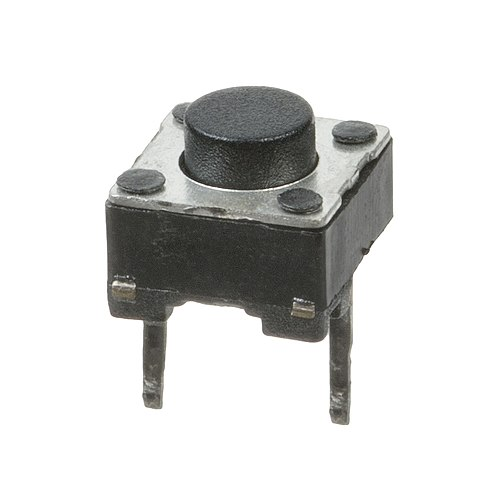
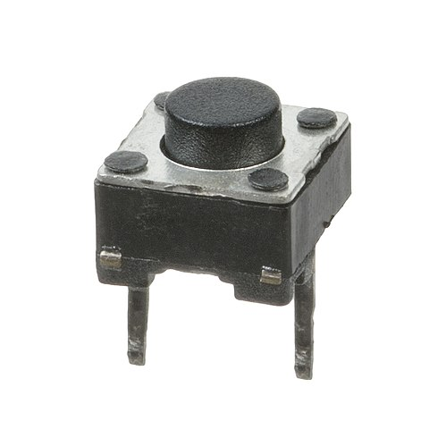
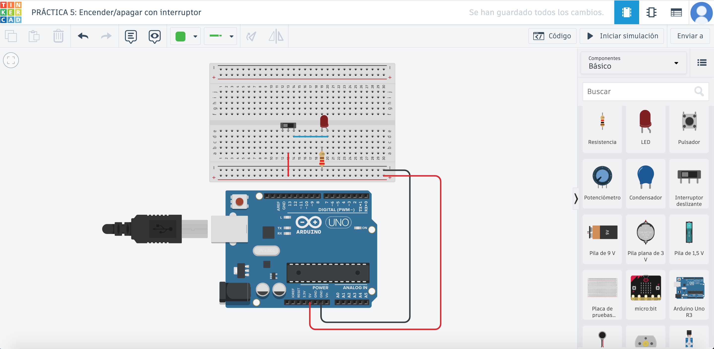

En este apartado seguiremos empleando LEDs que funcionarán tanto con interruptores como con pulsadores.

En este apartado seguiremos empleando LEDs que funcionarán tanto con interruptores como con pulsadores.

En esta práctica se creará un circuito simple con un interruptor deslizante, con el que encenderemos o apagaremos un LED protegido con su correspondiente resistencia. Es posible hacerlo sin programar, pero aquí veremos las dos versiones.
Opción 1: El interruptor no es controlado por arduino
Como vemos en la imagen del esquema, ni el led ni el interruptor están conectados a ningún pin de la placa. Ésta sólo funciona como si fuera una pila.

Opción 2: El interruptor es controlado por arduino
En esta ocasión tanto el led como el interruptor son controlados por la placa, están conectados a los pines 1 y 10 respectivamente. Ambos componentes llevan su resistencia, la del led es de 220Ω y la del interruptor la hemos puesto de 330Ω.
En esta práctica, vamos a usar el interruptor para conmutar entre dos LED, uno verde conectado al pin 1 y otro azul conectado al pin 2. Al cambiar la posición del interruptor se cambia también el led que se enciende.
En esta práctica se va a encender un LED utilizando un pulsador conectado al pin 7 con una resistencia de 10KΩ (marrón-negro-naranja) de modo que si se pulsa se encenderá el LED conectado al pin 5 y con su resistencia de 220Ω (rojo-rojo-marrón) y al soltarlo se apagará.
Realizar un circuito en el que se utilice un pulsador del mismo modo que un interruptor, es decir, al pulsarlo-soltarlo se debe encender el led, y al hacerlo de nuevo se debe apagar.
Obra publicada con Licencia Creative Commons Reconocimiento Compartir igual 4.0